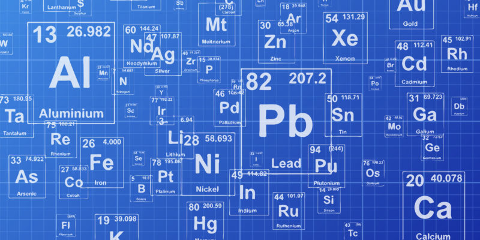
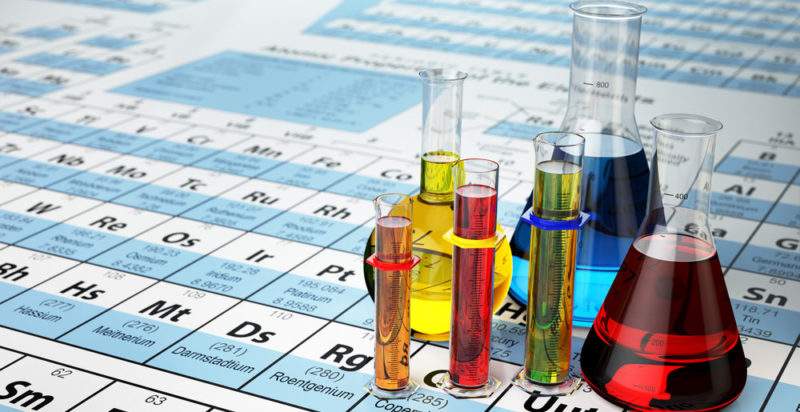

Nomenclatura Quimica Inorgánica
¿Que es Nomenclatura?
En química se conoce como nomenclatura (o nomenclatura química) al conjunto de normas y fórmulas que determinan la manera
de nombrar y representar a los diversos compuestos químicos conocidos por el ser humano, dependiendo de los elementos que
los componen y de la proporción en cada elemento.
Importancia de Nomenclatura
La importancia de la nomenclatura química radica en la posibilidad de nombrar, organizar y clasificar
los diversos tipos de compuestos químicos, de manera tal que solamente con su término identificativo
se pueda tener una idea de qué tipo de elementos los componen y, por lo tanto, qué tipo de reacciones
pueden esperarse de estos compuestos.
Nomenclatura química Inorgánica
Es un sistema de símbolos y nombres, tanto para los elelmentos químicos como para los compuestos que resultan de las combinaciones químicas. El lenguaje de la química es universal, de tal manera que para el químico, el nombre de una sustancia, no solo la identifica sino que revela su fórmula y composición. La Unión Internacional de Química Pura y Aplicada (IUPAC) se reúne periódicamente con el fin de fijar las normas que se deben seguir para unificar el lenguaje y las técnicas de publicación.

Oxidos
Son compuestos que se forman con oxígeno y algún otro elemento metálico o no metálico. Se nombran usando prefijos de acuerdo a la cantidad de átomos que tenga cada molécula de óxido. Por ejemplo: trióxido de digalio (Ga2O3), monóxido de carbono (CO). Cuando el elemento oxidado es metálico, se llaman óxidos básicos; cuando es no metálico, se llaman anhídridos u óxidos ácidos. Por lo general el oxígeno en los óxidos tiene estado de oxidación -2.
Peróxidos
Son compuestos formados por la combinación del grupo peroxo (-O-O-) O2-2 y otro elemento químico. Por lo general, el oxígeno tiene estado de oxidación -1 en el grupo peroxo. Se nombran igual que los óxidos pero con la palabra “peróxido”. Por ejemplo: peróxido de calcio (CaO2), peróxido de dihidrógeno (H2O2).
Superóxidos
También son conocidos como hiperóxidos. El oxígeno tiene estado de oxidación -½ en estos compuestos. Se nombran regularmente como los óxidos, pero empleando la palabra “hiperóxido” o “superóxido”. Por ejemplo: superóxido o hiperóxido de potasio (KO2).
Hidruros
Son compuestos formados por hidrógeno y otro elemento. Cuando el otro elemento es metálico, se denominan hidruros metálicos y cuando no es metálico se llaman hidruros no metálicos. Su nomenclatura depende de la naturaleza metálica o no metálica del otro elemento, aunque en algunos casos se usan los nombres comunes, como en el amoníaco (o trihidruro de nitrógeno).
-Hidruros metálicos
Para nombrarlos se utiliza el prefijo numérico según la cantidad de átomos de hidrógeno seguido del término “hidruro”. Por ejemplo: monohidruro de potasio (KH), tetrahidruro de plomo (PbH4).
-Hidruros no metálicos.
Se añade la terminación -uro al elemento no metálico y después se añade la frase “de hidrógeno”. Por lo general, se encuentran en estado gaseoso. Por ejemplo: fluoruro de hidrógeno (HF(g)), seleniuro de dihidrógeno (H2Se(g)).
Oxácidos
Son compuestos que también se nombran oxoácidos u oxiácidos (y popularmente “ácidos”). Son ácidos que contienen oxígeno. Su nomenclatura exige usar el prefijo correspondiente al número de átomos de oxígeno, seguido de la palabra “oxo” unida al nombre del no metal terminado en “-ato”. Al final se añade la frase “de hidrógeno”. Por ejemplo: tetraoxosulfato de hidrógeno o ácido sulfúrico (H2SO4), dioxosulfato de hidrógeno o ácido hiposulfuroso (H2SO2).
Hidrácidos
Son compuestos formados por hidrógeno y un no metal. Al disolverlos en agua dan soluciones ácidas. Se nombran usando el prefijo “ácido” seguido del nombre del no metal, pero con la terminación “hídrico”. Por ejemplo: ácido fluorhídrico (HF(ac)), ácido clorhídrico (HCl(ac)), ácido sulfhídrico (H2S(ac)), ácido selehídrico (H2Se(ac)) . Siempre que se represente la fórmula de un hidrácido, se debe aclarar que está en disolución acuosa (ac) (de lo contrario, se puede confundir con un hidruro no metálico).
Hidróxidos o bases.
Son compuestos formados por la unión de un óxido básico y agua. Se reconocen por el grupo funcional -OH. Se nombran genéricamente como hidróxido, unido a los prefijos respectivos dependiendo de la cantidad de grupos hidroxilo presentes. Por ejemplo: dihidróxido de plomo o hidróxido de plomo (II) ( Pb(OH)2 ), hidróxido de litio (LiOH).
Sales
Las sales son producto de la unión de sustancias ácidas y básicas. Se nombran de acuerdo a su clasificación: neutras, ácidas, básicas y mixtas.
-Sales neutras
Se forman por la reacción entre un ácido y una base o hidróxido, liberando agua en el proceso. Pueden ser binarias y ternarias dependiendo de si el ácido es un hidrácido o un oxácido.
-Si el ácido es un hidrácido, se llaman sales haloideas. Se nombran usando el sufijo -uro en el elemento no metálico, y el prefijo correspondiente a la cantidad de este elemento. Por ejemplo: cloruro de sodio (NaCl), tricloruro de hierro (FeCl3).
-Si el ácido es un oxácido, también se llaman oxisales o sales ternarias. Se nombran usando el prefijo numérico según la cantidad de grupos “oxo” (cantidad de oxígenos O2-), y el sufijo -ato en el no metal, seguido del estado de oxidación del no metal escrito en números romanos y entre paréntesis. También se pueden nombrar usando el nombre del anión seguido del nombre del metal. Por ejemplo: tetraoxosulfato (VI) de calcio (Ca2+, S6+, O2- ) o sulfato de calcio (Ca2+, (SO4)2-) (CaSO4), tetraoxofosfato (V) de sodio (Na1+, P5+, O2-) o fosfato de sodio (Na1+, (PO4)3-) (Na3PO4).
-Sales ácidas
Se forman por reemplazo del hidrógeno en un ácido por átomos metálicos. Su nomenclatura es igual a la de las sales neutras ternarias, pero añadiendo la palabra “hidrógeno”. Por ejemplo: hidrogenosulfato (VI) de sodio (NaHSO4), se cambia un hidrógeno del ácido sulfúrico (H2SO4) por un átomo de sodio, hidrogenocarbonato de potasio (KHCO3), se cambia un hidrógeno del ácido carbónico (H2CO3) por un átomo de potasio.
-Sales básicas
Se forman reemplazando los grupos hidroxilos de una base por los aniones de un ácido. Su nomenclatura depende de o un oxácido.
-Si el ácido es un hidrácido, se emplea el nombre del no metal con el sufijo -uro y se le antepone el prefijo numeral de la cantidad de grupos -OH, seguido del término “hidroxi”. Al final se pone el estado de oxidación del metal si es necesario. Por ejemplo: FeCl(OH)2 sería dihidroxicloruro de hierro (III).
-Si el ácido es un oxácido, se usa el término “hidroxi” con su prefijo numeral correspondiente. Después se añade el sufijo correspondiente a la cantidad de grupos “oxo” y se pone la terminación -ato al no metal, seguido de su estado de oxidación escrito en números romanos y entre paréntesis. Por último, se pone el nombre del metal seguido de su estado de oxidación escrito en números romanos y entre paréntesis. Por ejemplo: Ni2(OH)4SO3 sería tetrahidroxitrioxosulfato (IV) de níquel (III).
Sales mixtas
Son producidas al sustituir los hidrógenos de un ácido por átomos metálicos de distintos hidróxidos. Su nomenclatura es idéntica a la de las sales ácidas, pero incluyendo ambos elementos. Por ejemplo: tetraoxosulfato de sodio y potasio (NaKSO4).
